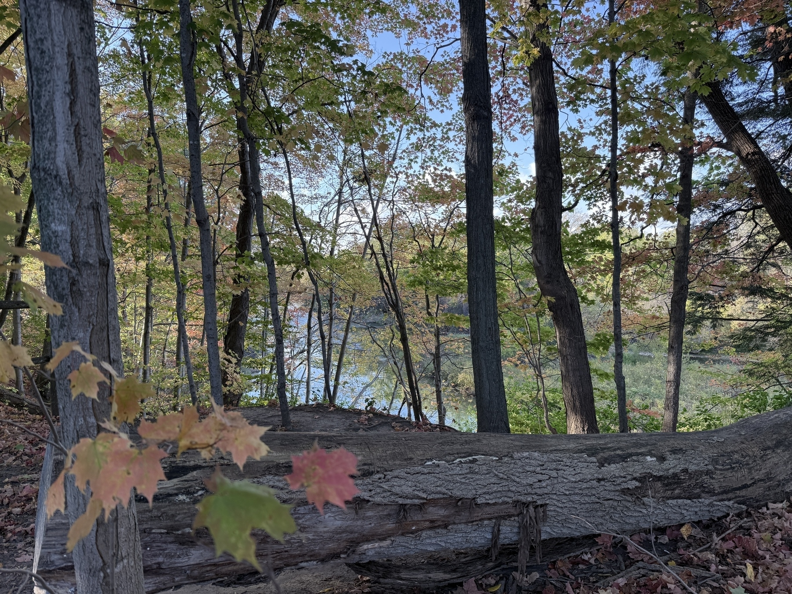
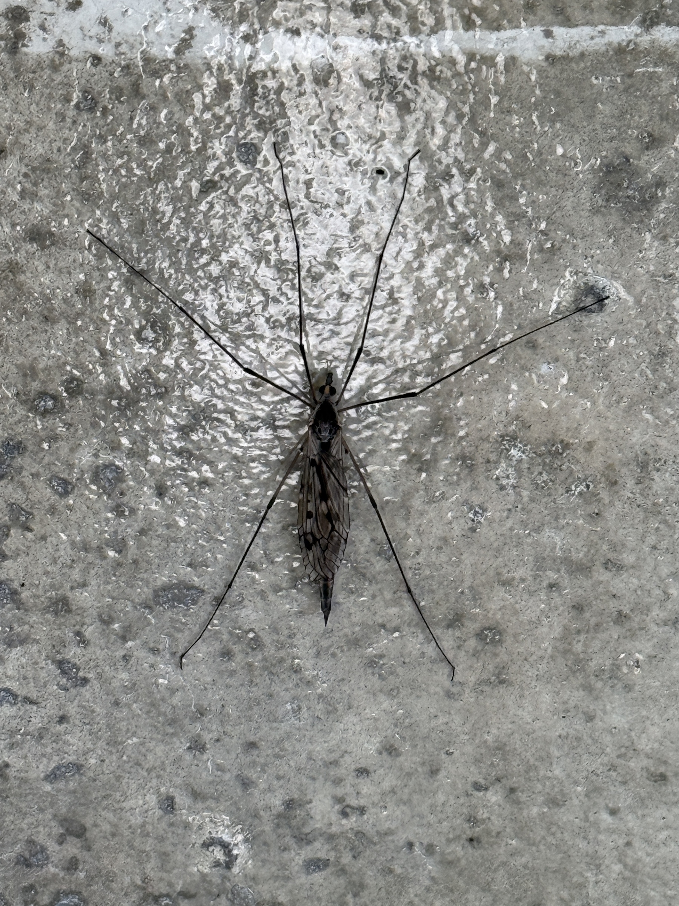
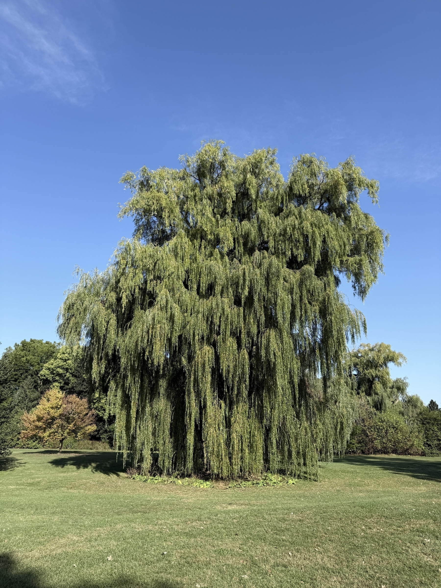
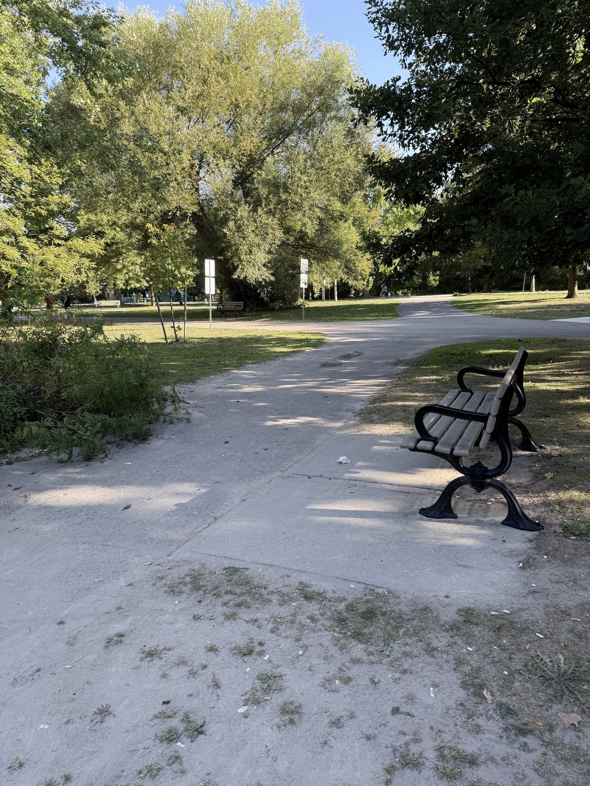
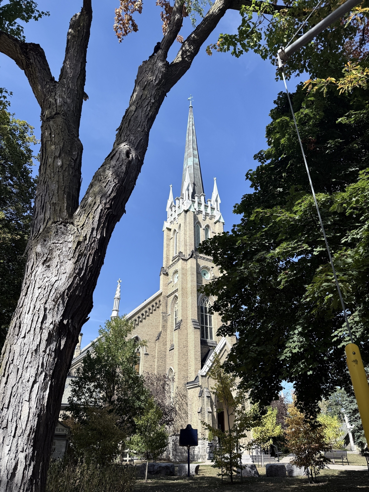
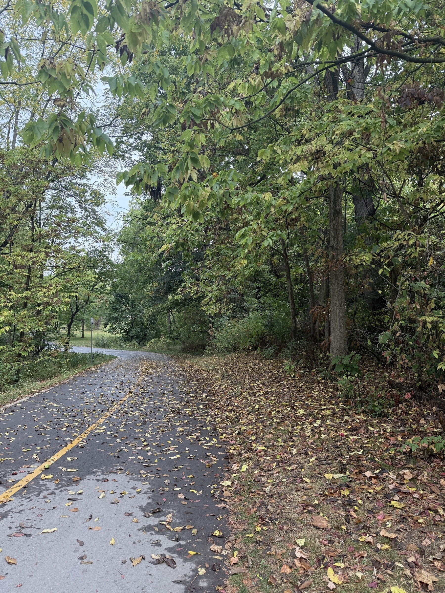
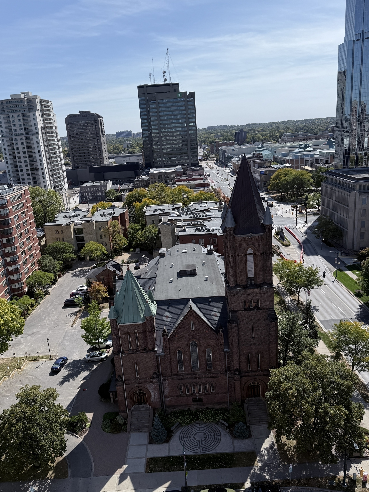
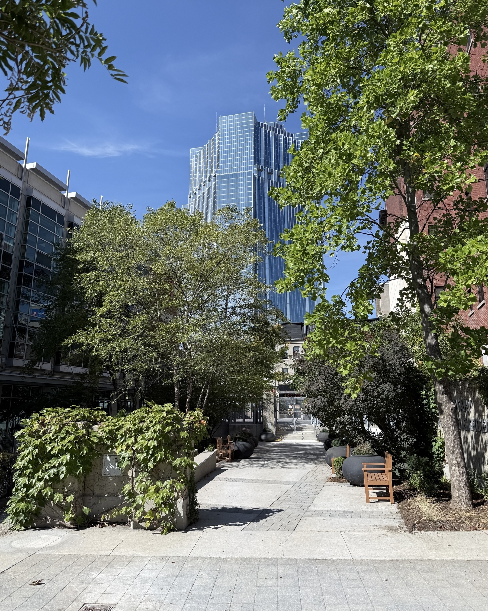

I had completely forgotten about this walking trail. As I walked it the other day I determined to visit it regularly. All Trails app makes it easy to see where you’re going and how long it will take you to get there.
This is likely the last camp fire of the season. We bought our RV as an escape during Covid and have never regretted it. Four years later, we’re settled in and enjoy having a closeby retreat from our somewhat hectic life.
Saw this little guy on our walk this morning. No clue what type of insect it is, but will no doubt see more like it in the coming days till the weather gets cooler.
I know that I am prone to enthused exaggeration, but on my walk today I saw the most beautiful tree in the park. Before you judge me, know that I already have tempered my remarks for I really wanted to say that on my walk today I saw the most beautiful tree in the whole wide world.
Life can be a soul-sucking rush with days filled fetching and toting, going and coming, planning and revising. Days end with fitful sleep and new ones begin with schedules already super-saturated. Pause, oh Self. There’s value and balance to be found in solitude, stillness and contemplation.
I’m waiting in a weaving line with crowds of people ahead of me. Rain might be coming; the air is heavy and moist. The arena doors won’t open for another half hour at least and I could easily succumb to impatience, discouragement or annoyance. Then I look up and suddenly I’m lost in the sky’s beautiful immensity.
A stately old church in the heart of downtown London. Built in 1869, an architectural example of Gothic Revival, with a prominent tower and steeple, pointed arches and lots of stained glass. Why does a beautiful church setting more easily inspire reverence for me?
I love walking in the Fall. The cool temperatures, colourful leaves and quiet stillness make me want to linger on the pathway.
Took a ride with the family in an open car on this old diesel from the 1950s. The scenic ride from the Port Stanley terminal to the boundary of St. Thomas lasted about an hour. It was a perfect way to celebrate the 87th birthday of a life-long railway enthusiast.
Viewing the city from the top of city hall. A great reminder that a bird’s eye view provides a different perspective.
Explored Central Library’s Rotary Garden, a secret oasis in the midst of downtown London. Lots of shady places to sit, read and bask in tranquility.
Yes, I’m still retired and no, it no longer sucks. Looking back at my career path, I can say, without a doubt that I enjoyed teaching far more than administration. I feel that my moments of biggest impact came in the classroom and not the office.
Currently, I have three part-time jobs that keep me as busy as I want to be. Two are related to education, but the other is not. These work commitments typically consume just a few hours during the week and still leave me the the freedom to juggle my calendar and accommodate my whims.
Do I regret choosing education as my career path? No. My years as a teacher and then administrator were good ones. I worked hard, enjoyed my days and felt that what I did was important. The connections I made with others along the way still provide me with lots of memories to savor and stories to share.
I came into the administrative role with high expectations. I expected a perfect opportunity to empower staff, support students and engage the community. I tried my best to do this in four schools: once as vice principal and three times as principal. I’m glad I knew these basic principles before coming into the role:
As a newcomer to the school, I knew it was better and smarter at first to watch and listen before starting to make changes based on initial observations and assumptions. Sometimes a practice that looks ineffective is in place for a very good reason. Sometimes, though, a resistance to change is none other than a reluctance to take initiative, learn new skills and put in the work.
Different leaders have different styles that reflect the way they interact with others. I am collaborative. Before I make a decision of consequence, I instinctively reach out strategically to others and draw upon their knowledge and experience. It was natural, therefore, to do this as an administrator.
My leadership motto is “collaboration is multiplication”. Consulting and brainstorming with those impacted leads to wiser, more fulsome decisions, more collective support and the kind of change powerful enough to break through the status quo for the ultimate good of the learners.
When I began my teaching career, I never thought about any type of leadership beyond the classroom. I was very comfortable at the front of the class and had no issue speaking with supervisors, giving workshops to colleagues and conferencing with parents. Leading a school though, I believed, took an additional skill set: decisiveness in decision making, fluency in speech and relentless determination when dealing with missteps from anyone: staff, students or parents. Such principals were respected, but not always liked. If that was what it took to be an effective leader, count me out, I thought.
It was shortly after I had transferred to another school that my principal there suggested I take on some administrative duties. She saw in me some qualities that she thought fit her vision of what a leader was. We obviously had different visions, but whatever. I was at a point in my career where I was looking for something different to do. After so many transfers, a sameness had crept in where current students reminded me of ones I had already taught, the teacher down the hall was just like a friend I’d worked with previously, and creative untried ideas became fewer and far between. I was ready for a change and change, it turned out, was ready for me.
I revelled in the new found freedom to try new things, switch grades, work with different colleagues and relocate to other school communities when I felt the time was right.
Over the course of the next twenty years, I taught in every grade, transferred to eight different schools and acquired a plethora of additional qualifications along with an additional university degree. During that time, I climbed the ranks from teacher to principal.
I am curious by nature and during my career was always open to learning new things, teaching and leading in different schools and working within a variety of schools and their communities.
Looking back, I always appreciated the fact that I could envision an uninterrupted career path to retirement. When I felt that I had learned and contributed all I could in a particular school, I looked for a new place to put down roots and grow. There was never a thought that leaving one place would bring unemployment: job security was never a problem like it had been previously.
Finding another position seemed like a huge challenge. I sent out resumes, followed up with phone calls and did everything I could do to get my name out where it might pay off. Who knew that the ticket to another job was sitting right beside me in the church choir. A fellow baritone, a principal in the local public system, mentioned that he had an open position at his school and invited me to apply.
Without getting into all the details related to interviews, reference checks and a mountain of paperwork, let’s just say that in September I was in a new school earning more than double the wages and, to be honest, working with less effort and more resources than I ever had before. My reset rekindled my enthusiasm for teaching.
Networking found me another teaching position in a private elementary school in the same city. This was ideal since with a wife and child now, I was really not in a mindset to move.
I started from scratch once again: new colleagues, new students, new courses. I had forgotten how much work fresh starts could be. I loved most things about the new position. Teaching in this fledgling private school reinforced in me the importance of teamwork.
All of us on staff made sacrifices to be there and depended on one another to do more with less. School spirit was high and staff morale made it fun to come to work.
Three years later though, I was struggling once again to find a financial balance. My salary covered my mortgage and basic household needs, but not much beyond that. We resorted to credit cards to meet unexpected expenses and watched our accumulated debt grow.
Our family finances were an ongoing cause of discouragement. With another child on the way, I began exploring other career possibilities.
It was a conversation I still remember more than forty years later. The principal stopped me mid flight as I headed to my second floor classroom. “Dont cash your pay check,” he said. “There might not be enough money to cover it right now.” That one brief encounter clouded my vision of the future. The work was rewarding in itself, but warm feelings don’t pay the rent.
Finances at the school waxed and waned like the tide and, in spite of the insecurity, I lasted there seven more years. Then, late one summer on the week before school was to begin, things collapsed completely: a major donor pulled out his considerable funds in order to finance his legal woes.
A concerned group of parents managed to scrabble together a leaner version of the school a week later. A new Board was formed and a fraction of the staff was brought back. I was rehired at a much deflated salary and I determined that by next Fall I would be working somewhere else.
This chronic job insecurity played havoc with my mental health and prevented me from seeing further ahead than the next paycheck. This was no way to live.
In my small private school, I had lots of freedom to teach creatively as I developed a series of new courses for the high school. My new colleagues were awesome and often even inspiring: friendships were blooming. My students were well-behaved, keen and fun to teach. I couldn’t ask for more supportive parents who volunteered their time and talents and were so generous with their encouragements to staff.
I couldn’t imagine myself wanting to go anywhere else…ever. That mindset started to erode four months in after one brief conversation with the principal.
Once school ended and I was back home, my job search fizzled. Living rent-free with my parents, chowing down on their food and driving their car when I needed it was not ever to be a long-term reality. It was, however, nice to be their pampered son again.
I declined a couple positions in the ultra north where the pay would be great, but living conditions a test of character and commitment. The job I did get came unexpectedly out of the blue.
An established independent school in my undergraduate city was looking for an intermediate teacher who could handle History, English and related subjects. This was almost the last week of summer and they, no doubt, were desperate to have staff in place. It sounded perfect.
One week later I was decorating a classroom and gathering resources. I rented an apartment close by and, thanks to my dad, had a beast of a car to drive: his faithful Ford Galaxy 500 would be my ride for the next few years. The learning curve indeed was steep and what I recall most of all from those early years was my utter exhaustion.
Since there were few hiring prospects in the public system, I decided to target private schools. There were lots of these in Ontario and surely, I reasoned, some must need new staff. I sent out scores of applications whether there was a posting listed or not. I got a few responses and a couple interviews. One interview was particularly memorable because it was so bizarre.
A church had recently started up a high school and was looking to hire a teacher to oversee the progress of its students as they worked independently through individual subject booklets. It didn’t matter that I was not qualified in maths and sciences because in their eyes this curriculum was so good students would understand the material on their own. I would simply be a resource and guide. They were ready to hire me on the spot, but there was just one tiny little condition: I needed to get my hair cut so that the sides were above my ears. Ironically, I recently had gotten a haircut specifically for this interview and had been bothered by how short it was. The interview team was genuinely surprised when I declined their job offer and as I left they encouraged me to pray about reconsidering my decision. I didn’t. Some decisions are just obvious.
My first teaching placement was humbling. Any illusions that I had of being innately gifted at educating others quickly evaporated. My mentor had lots of opportunities for constructive feedback and provided me with pages of suggestions each time I taught.
My lessons were rich in content, but poor in engagement. Students listened and absorbed, but weren’t particularly challenged. Attempts to use the seventies’ version of technology were laughable.
I remember walking down the hallway at the halfway point in my placement thinking that perhaps this was not the career for me. I was very discouraged, totally exhausted and wanted to quit. Fortunately, I didn’t.
My next placement with a different mentor in a totally new setting was more successful. I’m a quick learner and was determined to use my previous negative experience to promote growth and improvement. I learned, as well, that for me, words of affirmation and encouragement can make a world of difference.
No matter how logical our plans may be, life can easily thwart them. I was not immediately accepted at the local teachers’ college and ended up at one in a sprawling mega city two hours away. Networking found me an appropriate place to live, somebody to show me subway navigation and teach me urban survival hacks.
Teachers’ college memories are a blur of classes, practice teaching sessions and recurring bouts of exhaustion. In his opening address to the new candidates, the faculty’s dean told us that few of us would survive the dismal job market and land a teaching position. His zero inspiration made me resolve to beat the odds in spite of him.
With an eye to teaching, I chose college courses which would give me a broad background knowledge in history. Of all the subjects I studied in high school, history was the one that caught my interest, thanks in large part to stellar teachers who helped me see beyond facts and events to cyclical patterns of human behaviour. The rise and fall of empires and civilizations might vary in timelines, but followed the same inevitable paths to extinction.
Any historical concentration which might be helpful to my teaching career was explored. Added to that was a smattering of courses in economics, politics and English. Graduation came four years later with an Honours BA and the hope of acceptance at the teachers’ college nearby.
Once the busy days of settling in were behind me, the patterns of routine began to form. Newness gave way to familiarity and I was proud of the way I navigated the practical logistics of independence. However, such positives did not ward off my increasing sense of isolation and loneliness.
Living off site made authentic people connections irregular at best and I spent a lot of time alone in my room. My roommate, still a stranger at this point, juggled a busy schedule with part time work and was rarely home. Loneliness, like a weighted blanket, pressed me down as I realized building friendships and having a sense of belonging wasn’t going to be quick.
It’s not a bad thing, though, to strip away the chatter and busyness and be left alone to think and acknowledge self. Mindfulness gradually became an antidote to despair and, over time, led to healthier choices related to spending my time and cultivating friendships. These were days of new beginnings for me and being away from the constraints of home added a broader spectrum of choices to the mix.
I chose the same university as my sister. Not a surprise to anyone, I’m sure. I was already familiar with the city and campus thanks to several visits during the sister pickups and dropoffs pre and post each academic year. Accommodation was arranged for me through my parents’ networking connections. A basement apartment in the home of a retired couple was secured right near campus. What could possibly go wrong?
When it came time to leave home and head to university, I was torn. On the one hand I was excited. Three of my siblings had already left to study and their experiences seemed only positive from my perspective. On the other hand, I was anxious (understatement) to leave home with so many what-ifs clouding my future. I settled on a university which had a satellite college in my home town, citing the offer of a full scholarship as my reason, but honestly I was just not ready to leave home where things were predictable and safe.
The college experience was a new element in my life at least and the different setting with higher expectations and new people to navigate, significantly pushed back the boundaries of my comfort zone. The pride I felt in my academic successes in that first year, however, was tempered by the voice in my head telling me that I had settled for less and that I needed to leave home and actually launch. I was ready … in an act-as-if sort of mind set.
There is definitely benefit in being part of a collective. I’m not talking about a visceral need to belong, although that could be a topic for another day. I am being more pragmatic and thinking of all the times I needed something tangible: a ride, some cash, a bit of advice, a strong back and sometimes a pickup truck.
There was a time I thought self-sufficiency was something to strive for, but no longer. Reaching out and accessing allies to help is often more efficient, less stressful and nine times out of ten way more fun.
Reading the title might give the impression that I’m talking about body mass. It’s true that over the years I have significantly expanded my physical presence, but I’m referring to a different kind of largeness: the powerful presence of personality. Situations that previously cornered me in a victim scenario, I discovered, can be overthrown with a boost of enhanced personality. I liken it to a care bear belly boost that fills the air with positivity and overwhelms the negative intentions of bully wannabes.
A past tormentor was stunned into silence when he began mocking this choir boy carrying a box of chocolate bars for sale. A loud confident sales pitch coupled with an assertive walk towards him, stunned him into silence and put a forever end to his game. Life is easier when you’re large. I know.
Here’s a piece of advice that changed my life: act as if. I don’t recall who told me this or when I started implementing it, but it was a catalyst for positive change in my life. What does a confident person look like? Talk like? How does he move? Interact with others? I learned that if you act “as if” long enough, it becomes easier and feels natural. Others accept that this is the authentic you and over time, that’s exactly who you now have become.
I have the privilege of mentoring those just starting their careers and I pass along this time-tested advice. I phrase it differently, perhaps wrap it in a metaphor, but it’s essentially the same: act as if.
High school opened its doors to kids from various feeder schools. It was a chance for a fresh start, a reinvention. It’s true my new school had its potential bullies, but all the new faces and uncertainties for everyone, even bullies, made adjustment the priority.
Gradually, connections were made and like-minded niners forged friendships for company, convenience and protection. I joined lots of extra-curricular clubs and filled my non-class time with activity. I ate lunch with new friends and walked back and forth to school others. It was a new day and a new Don.
I was a classic bully magnet: shy, uncertain and a tad inept. Soft spoken, conflict avoiding and nerdy. On my way home from school one day, a couple dogs from opposite sides of the street teamed up and joyfully bark-chased me till they lost interest. Even animals knew a victim when they spotted one.
Every school has its collection of thugs who find their fun in teasing and torment. Mine was typical. The memories of what actually was said or happened have faded, but the smug faces of my tormentors are easily recalled all these years later. My early school years were not much fun. High school changed all that.
Gradually, I recognized what most already knew: if you want to do better at school, pay attention and do your work. It wasn’t and still isn’t rocket science, but it was a while before this guy made the connection. I got better at the school way of learning and started to enjoy a slow ascent from the bottom of the grading ladder.
Getting good grades and accolades became a way of boosting self-esteem in a context where I felt underestimated and discounted. Things were looking up. Then came the bullies.
I had the usual gamut of occupations in mind as a kid: firefighter, police officer, veterinarian and the like. It wasn’t until I had my first male teacher in grade 5 that I thought that maybe this would be something I would like to do. I don’t think that I ever considered any other career very seriously after that.
I didn’t do particularly well in school at first so I’m not sure why I thought teaching would be an appropriate option. In fact, one teacher spoke with my parents about holding me back so I could experience the joys of grade 3 once again. It didn’t happen and I moved on minus the extra joy. “Recommended” was the word used which basically was a wait and see until Christmas. Something must have clicked because Christmas came and went without the hook pulling me back a grade. I wasn’t setting the world on fire, but at least the movement was forward.
I tried acting starting with roles in kids’ musicals and then moved on to more serious productions geared towards adult audiences. It became obvious that blanking out, forgetting lines and ad-libbing were deal breakers. Unfortunately, practice doesn’t always make perfect. Besides, type-casting me as a snooty, self-important blowhard more than once was kind of humbling.
My experience on stage, however, gave me a huge appreciation for those who do it well and today I remain an avid theatre-goer.
As a kid, I was the kind every old lady adored. I was quiet, polite and could sit for hours without reprimand in the company of adults. Truth be told, I was coddled and shy. Being silent shielded me from notice and possible embarrassment. It’s ironic how my abilities often gave me a spotlight.
One of my teachers suggested I get into public speaking because I would be good at it. I thought that this was some sort of take-on-a-project-student effort on her part, and dismissed it. But eventually, even I had to admit when we gave speeches in schools, mine were actually pretty good.
During my career, I had many opportunities to stand up in front of audiences and make comments and give formal talks. At my retirement party, a member of my staff commented that one of the things about me that had always impressed her was my ability to give a speech at a moment’s notice on any topic under the sun. The shy little guy who still dwells within loves that.
I sang my first solo at a Christmas concert when I was in grade 9: the wise man who brought toddler Jesus the gold. Turns out this boy could sing and sing I did …. weddings, funerals, concerts and festivals. I sang for years and gradually realized that when people said I was great, it was true. 😳
What a great idea to join the community choir: new friends with a passion for singing and lots of concerts to fundraise for community projects and needy folks. We are a grey-headed bunch to be sure with lots of life experience, a mix of good and bad times and the wisdom that tags along with it.
Doing the same job you retired from is like eating leftovers. Tasty at first, but then predictably bland. New path: find some fun and maybe fulfilment doing enjoyable things. Joined a community choir, watched cheap Tuesday movies, walked trails by the river and got very busy.
A call from my former employer gave me a short term reprieve from my transition in the form of a series of short-term contracts basically doing what I had pre-retirement, but with reduced expectations and less accountability. Filling their gap also served to fill mine. Temporarily at least.
I remember my first post retirement project: binging Netflix’s Lost series …. 6 seasons and 121 episodes. Didn’t understand the ending, but a finish nonetheless. A series of unspectacular time-fillers followed showcased on social media with posts featuring cupcakes, treadmills, and balcony views.
I’m not saying a chance to reset and repurpose isn’t a good thing. For me, the transition was unexpectedly difficult. My work identity had masqueraded as real self and prioritized its needs for years. After the parties and well wishes, freedom’s glow lasted about two weeks.
Two words that I never thought would fit together: retirement and sucks. But it did. Some days, while I was working, thinking about retirement helped me hang onto sanity. Hang in there, I told myself. One day my time will be my own … completely. Be careful what you wish for.